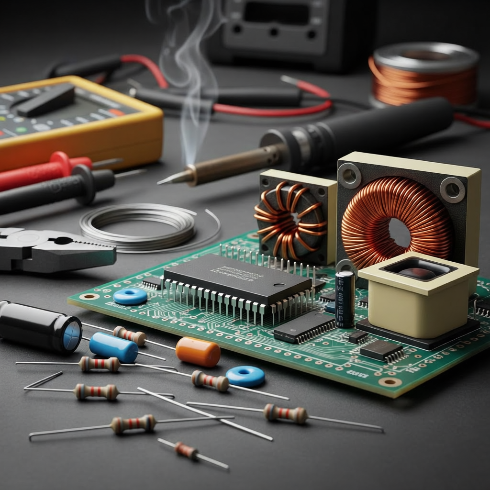

Conocer sobre el tema

Este recurso educativo digital ha sido diseñado especialmente para los estudiantes de ingeniería de la Universidad de Oriente. Tu objetivo aquí es cerrar la brecha entre las clases teóricas y las prácticas de laboratorio, permitiéndote interactuar con el entorno real de los componentes con total seguridad y conocimiento.
Objetivos de la Multimedia
Identificar visualmente la morfología, simbología y encapsulados reales de los componentes electrónicos básicos. Comprender el funcionamiento lógico, los códigos de colores y las aplicaciones prácticas de cada elemento en un circuito. Prevenir errores de conexión, interpretar las fallas más comunes y aprender las técnicas esenciales de diagnóstico en el laboratorio.
Instrucciones de Navegación
Menú Lateral: Utiliza el árbol de contenidos a tu izquierda para desplazarte de manera secuencial a través de los diferentes módulos temáticos (Hilos, Resistores, Diodos, etc).
Secciones Interactivas: Dentro de cada tema encontrarás imágenes reales, notas técnicas de importancia y recordatorios críticos para tus prácticas.
Autoevaluaciones: Al finalizar cada bloque temático, accede al nodo de Autoevaluación. Estas actividades interactivas te ofrecerán retroalimentación inmediata para que midas tu nivel de comprensión antes de asistir al laboratorio.